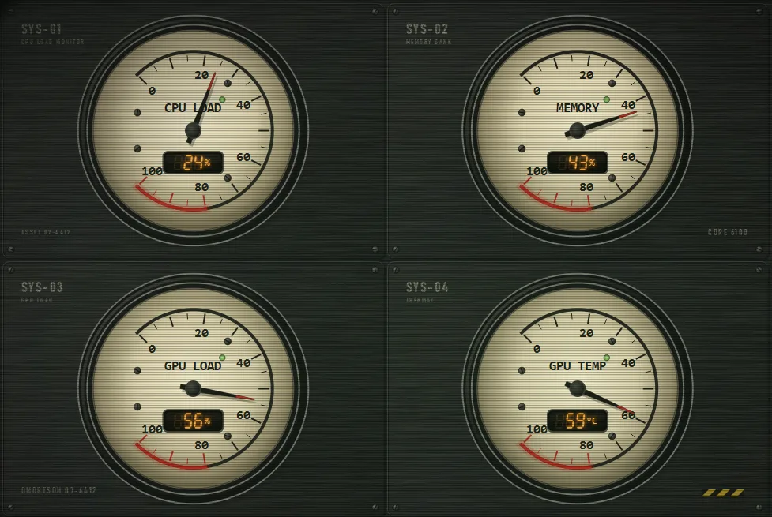
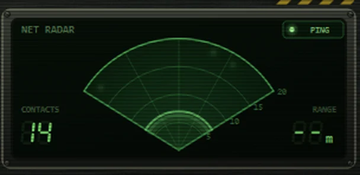

Omortson
A system monitor styled like the control console of an old industrial freighter: four backlit analog gauges, a teletype terminal, a green network radar, warning lamps and chunky switches, all behind a CRT filter.



Features
- Four analog gauges: CPU load, memory, GPU load and GPU temperature, with needle physics and warning zones
- Live side readouts for CPU, memory, GPU, VRAM, OS, uptime, disk and network, each opening a diagnostics screen
- A teletype terminal that types system events, alarms and the occasional cryptic transmission
- A network radar that shows active connections, with its own PING mute switch
- Warning lamps, rotary knobs, a VU meter, a boot sequence and a CRT filter you can switch off
- Optional ambient station noises, auto deep-sleep when idle, fullscreen mode and a keyboard reference (F1)
- Free and open source (MIT)
System requirements
- Windows 10 or 11 (64-bit)
- Any GPU: AMD and NVIDIA show load, temperature and VRAM; Intel and others show load and VRAM (temperature N/A)
- About 200 MB of free disk space
Install
- Download the latest
.zipfrom the Releases page. - Right-click it, choose Extract All, and pick a folder.
- Open the folder and run
Omortson.exe. - If Windows SmartScreen appears, click More info then Run anyway.
Notes: builds are not code-signed yet, so Windows may warn you the first time. To uninstall, just delete the folder. Press F1 in the app for the key reference.